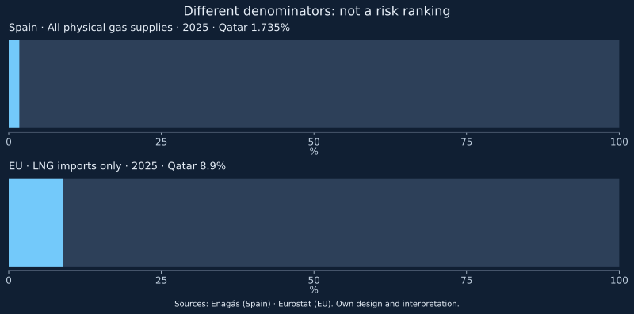

Qatar's share of Spanish gas supplies and its share of EU LNG import value use different denominators and units. Confusing them produces a false measure of vulnerability to disruption at Hormuz.
Before quoting a dependency percentage, define its scope. LNG imports, all physical gas supplies and national consumption are different quantities. Imports delivered to one system are also not necessarily consumed entirely within the same country.
Two 2025 figures, different denominators
Enagás reports Qatar at 1.735% of physical gas supplies to the Spanish system in 2025. Eurostat's release of 25 March 2026 gives Qatar an 8.9% share of the value of extra-EU LNG imports in 2025. Its statistical annex identifies this as share of trade in value. The first denominator concerns physical gas supplies; the second is monetary and covers LNG only. Neither is an oil statistic or an October 2026 observation.

| Figure | Period and denominator | Unsupported interpretation |
|---|---|---|
| Spain: 1.735% | 2025; all physical gas supplies to the system | “Only this share of consumption is at risk” |
| EU: 8.9% | 2025; value of extra-EU LNG imports | “8.9% of all EU energy crosses Hormuz” |
Dividing 8.9 by 1.735 does not measure how many times more vulnerable Europe is. Besides the different denominators, Spain is part of the EU. A valid comparison needs the same product, unit, period and geographic scope, distinguishing contracted, delivered and consumed volumes.
An arithmetic check, not measured losses
Enagás page 23 reports 372,498 GWh of physical supplies in 2025; the map on page 24 assigns 6,403 GWh to Qatar. Their ratio is approximately 1.719%, compared with the 1.735% published in the chart on page 25. Multiplying that published share by the total gives 6,462.84 GWh, about 59.84 GWh more than the map. These presentations do not reconcile exactly; we do not assign an unverified cause.
This comparison detects a discrepancy rather than selecting a true figure by arithmetic. Our chart retains the published share with this caveat. The map volume equals 6.403 TWh: one TWh is one thousand GWh. None of these data measures interrupted supplies or unserved energy. Exact physical comparison requires resolving the basis against the original revised series. Inputs are in the reconciliation CSV.
Limited direct exposure does not remove price exposure
A buyer without a Qatari cargo can still compete for replacements with buyers elsewhere. This describes a mechanism, not a quantified forecast of higher prices. The eventual cost also depends on contracts, hedging, inventories and demand. The monitor contains neither those contracts nor an elasticity with which to calculate household bills.
Three questions therefore need separate answers: which direct volume requires replacement, what replacement supplies cost and which infrastructure can receive and move them. Flexible infrastructure addresses the third question; it cannot guarantee the first two.
What an update would require
A current assessment needs the latest comparable Spanish supplies by origin, equivalent EU data and revisions from both sources. The monitor archive cannot replace those statistics: it records Hormuz assessments, not Spanish gas imports.
The context CSV preserves denominators. Sources: Enagás 2025 report, pages 23–25 and Eurostat, 25 March 2026, with its XLSX annex, VISUAL 2, A2 and D9:E9. Calculations, chart and adaptations are our own; Eurostat is not responsible for these conclusions. Only individual factual figures are cited; no third-party charts, photographs or report pages are reproduced. Rights and human editorial review remain pending.